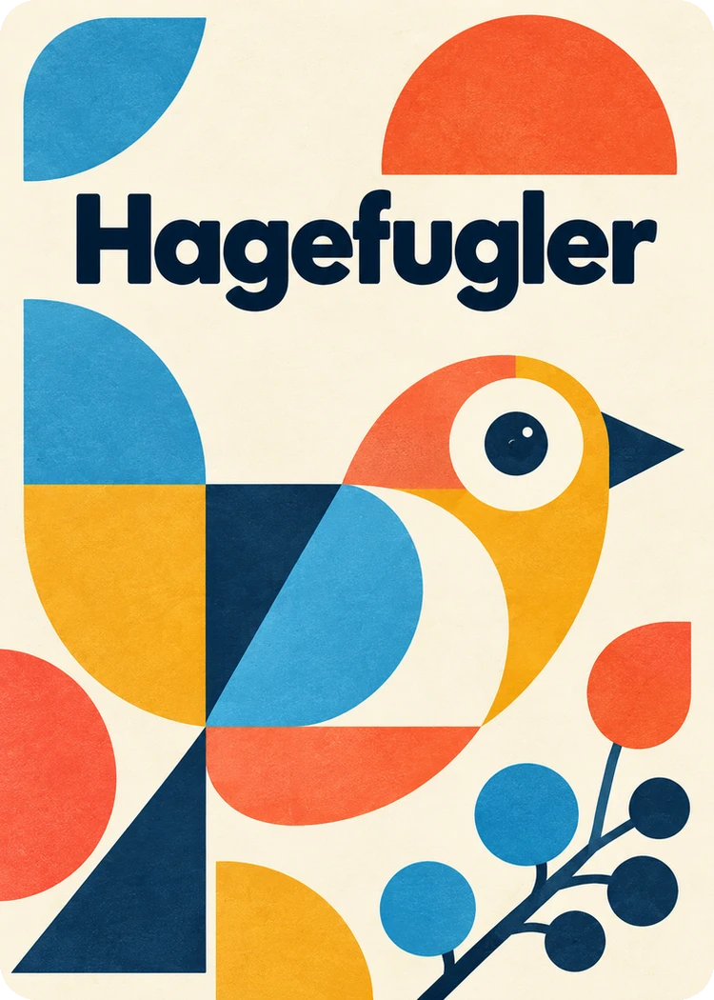

Trykk for å gå videre
Kort 001 av 060
Valget gjelder alle kortene på denne enheten. Avkrysningene dine påvirkes ikke. Trykk på bildet på et kort for å se det stort og bla mellom bildetypene.
Fuglene du har sett før du begynte med appen, gjerne med år. De gir ingen frø, men er med i livslisten din.
Sletter observasjonene, tellingene, frøene og kjøpene, så du begynner fra kort 001 igjen. Du velger om brukernavnet og innstillingene skal beholdes.
Kryss av fuglene du har sett før du begynte med appen. Året er valgfritt. Det lagres med en gang.
For hver art teller du det høyeste antallet du ser samtidig, ikke alle du ser i løpet av tellingen.

?